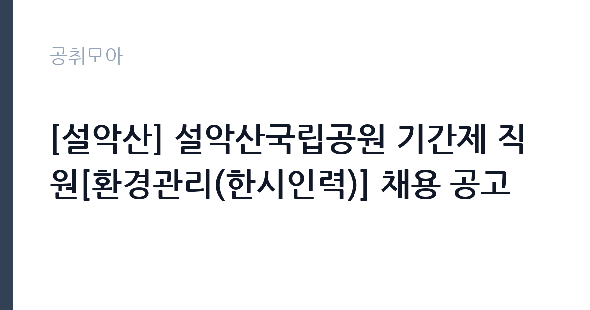

[공공기관] [설악산] 설악산국립공원 기간제 직원[환경관리(한시인력)] 채용 공고
국립공원공단 설악산국립공원사무소 · 강원 · 마감 2026-10-01 (D-8) · 출처 나라일터

한눈에 보는 모집 조건
| 기관 | 국립공원공단 설악산국립공원사무소 |
|---|---|
| 공고명 | [설악산] 설악산국립공원 기간제 직원[환경관리(한시인력)] 채용 공고 |
| 고용형태 | 일용직 |
| 근무지 | 강원 |
| 게시일 | 2026-09-23 |
| 마감일 | 2026-10-01 (D-8) |
지원자격, 이렇게 읽으세요
- 기간제(환경관리) 1명
- 접수 ~2026-10-01 마감
- 세부 조건은 원문 공고문 확인
공고문의 응시자격은 짧게 쓰여 있지만 실제로는 세 가지를 봅니다. 첫째 결격사유 해당 여부, 둘째 자격·경력의 직무 연관성, 셋째 근무 시작 가능일입니다. 셋 중 하나라도 애매하면 원문 공고문의 세부 조항을 먼저 확인하고 지원서를 쓰세요. 특히 국립공원공단 설악산국립공원사무소 공고는 일용직 전형이라 서류에서 직무 연관 키워드(공공기관)를 명시하는 게 유리합니다.
이 공고의 포인트
합격 가능성을 가르는 한 줄은 '기간제(환경관리) 1명'입니다. 태그로 치면 ''에 해당하는 지원자가 유리한 구조입니다. 국립공원공단 설악산국립공원사무소 공고는 D-8이라 시간이 촉박하니, 해당자는 오늘 지원서를 열고 비해당자는 관련 공고로 눈을 돌리는 결단이 필요합니다.
전형은 어떻게 진행되나
일반적인 순서는 서류심사 통과 후 면접심사입니다. 서류에서는 직무와 연결되는 경험이 있는지, 면접에서는 그 경험을 직접 설명할 수 있는지를 봅니다. 마감일(2026-10-01) 코앞에 몰리면 원서 접수 자체가 안 될 수 있으니 최소 하루 전에 제출하세요. 제출 뒤에는 접수번호·수험표가 정상 발급됐는지 확인이 필수입니다.
원문에서 확인한 전형 방식
설악산국립공원 기간제 직원 채용 공고 국립공원공단 설악산국립공원사무소에서 근무할 기간제 직원을 채용하고자 아래와 같이 공고합니다. 1. 채용분야: 기간제 직원[환경관리(한시인력)] * 직무 개요 및 근무조건 관련 자세한 내용은 첨부파일(공고문)을 참고하시기 바랍니다. 2. 채용인원 및 근무예정지: 2명, 자원보전과(강원 속초시) 3. 근무기간: 2026. 10. 8. ~ 11. 9. 4. 전형일정 - 공고 및 접수: 2026. 9. 23.(수) ~ 10. 1.(목) 18:00 까지 - 직무적합성 심사 및 최종합격자 발표: 2026. 10. 2.(금) 예정 - 근무시작일: 2026. 10. 8.(목) * 내부사정에 따라 변경될 수 있음 5. 접수방법 - 우편 및 방문 접수(강원특별자치도 속초시 설악산로 833, 설악산국립공원사무소 행정과) - 마감일 마감시간 내 도착분에 한함 자세한 사항은 첨부 공고문을 참고하시기 바라며, 기타 채용 관련 사항은 설악산국립공원사무소 행정과(033-801-0962, 인사담당자)으로 문의하시기 바랍니다.
위 내용은 국립공원공단 설악산국립공원사무소 원문 공고의 전형 항목을 그대로 옮긴 것입니다. 단계별 배수와 평가 요소가 적혀 있으니 본인 강점과 맞는 단계에 맞춰 준비 순서를 정하세요. 전형별 합격자 발표일도 원문에서 함께 확인하는 것이 좋습니다.
이런 분께 추천해요
- 강원 근무가 가능한 분 — 통근·거주 조건이 맞는지가 1순위입니다
- 일용직 전형을 찾는 분 — 공공기관 분야 관심자라면 우선 검토 대상입니다
- 마감(2026-10-01) 안에 서류를 낼 수 있는 분 — D-8이니 오늘 지원서 초안부터 잡으세요
지원 전 체크리스트
- 국립공원공단 설악산국립공원사무소 원문 공고문 저장했는가(공고 변경 대비)
- 지원서 초안과 증빙 파일이 준비됐는가
- 접수 마감일 2026-10-01(D-8)을 달력에 표시했는가
- 강원 출퇴근·거주 조건이 맞는가
모집 일정과 제출 타이밍
이번 공고의 접수 기간은 2026-09-23부터 2026-10-01까지입니다. 남은 기간은 약 8일입니다. 서류 준비에 7일을 쓰고 마지막 하루는 접수·확인용으로 남겨두세요. 원서 접수는 시작일보다 마감일에 몰리는 구조라, 서버가 느려지는 마감 당일은 피하는 게 상책입니다. 권장 스케줄을 짜보면 첫째 날 공고문 정독과 지원자격 체크, 중간 날 자기소개서 작성과 증빙 준비, 마감 전날 접수 시스템 사전 입력입니다. 특히 국립공원공단 설악산국립공원사무소 채용은 마감 이후 추가 접수를 받지 않으니, 접수번호와 확인증 출력까지 마쳐야 비로소 지원 완료입니다.
직무 이해하기: 공공기관
공공기관 실무의 공통분모는 직무기술서와 성실성입니다. 채용 분야의 직무기술서를 내려받아 필요 역량을 자기소개서에 그대로 녹이세요. 공공 채용은 블라인드 전형이 많아 사진·학교·출신지를 가리는 대신 직무 연관 경험의 구체성이 당락을 가릅니다. 국립공원공단 설악산국립공원사무소의 이번 채용(일용직)도 같은 잣대로 보면 됩니다. 공고 제목에 적힌 분야명과 직무기술서의 필요역량을 나란히 놓고, 본인 경험에서 겹치는 키워드를 세 개 이상 뽑아보세요. 그 세 개가 자기소개서와 면접 답변의 뼈대가 됩니다.
자기소개서 작성 팁
좋은 자기소개서의 공식은 단순합니다. 지원 분야(공공기관)와의 인연 한 줄, 숫자가 박힌 경험 두 개, 입사 후 포부 한 단락입니다. 반대로 국립공원공단 설악산국립공원사무소 서류 탈락 사유 상위권은 늘 비슷합니다. 직무와 무관한 자서전식 전개, 증빙 자료와 어긋나는 주장, 마감일(2026-10-01) 실수입니다. 일용직 전형 지원자라면 채용 즉시 업무가 가능하다는 점을 글로 못 박아 두세요. 실무 투입 속도가 가산점처럼 작용합니다.
면접 준비 포인트
면접관의 질문은 두 갈래입니다. 서류 내용의 사실 관계 확인, 그리고 우리 조직에 맞을지에 대한 판단입니다. 자소서의 핵심 경험 두 개를 1분 안에 설명하는 연습을 해두고, 국립공원공단 설악산국립공원사무소의 대표 사업 하나를 지원 분야(공공기관)와 엮은 답변을 준비해 가세요. 마무리 질문에서는 근무지(강원)와 일용직 근무가 가능하다는 뜻을 간결하게 전하는 게 좋습니다. 단정한 복장, 30분 전 도착, 결론 우선 답변이 기본 수칙입니다.
급여·근무조건 읽는 법
공고문의 보수 표기는 호봉·수당·상여를 합친 기준이 아니라 기본급 기준인 경우가 많습니다. 실제 수령액은 원문의 보수·복무 조항과 동일 기관 재직자 채용 후기를 함께 봐야 가늠이 됩니다. 일용직 공고라면 계약 기간, 연장·전환 조건, 4대 보험과 퇴직금 적용 여부를 원문에서 반드시 확인하세요. 근무지(강원)가 도서·산간이거나 교대 근무가 포함된 경우에는 주거 지원·통근버스 조항도 체크리스트에 넣으세요.
자주 묻는 질문
- 다른 분야와 중복 지원이 가능한가요?
공고문에 별도 금지 조항이 없으면 가능하지만, 국립공원공단 설악산국립공원사무소처럼 분야별 중복지원을 막는 기관이 많습니다. 원문 '지원 시 유의사항'을 먼저 확인하고, 가능하다면 가장 합격 가능성이 높은 한 분야에 집중하세요. - 우대사항에 해당되는지 어떻게 확인하나요?
이번 공고의 핵심 우대 조건은 '기간제(환경관리) 1명'와 ''입니다. 증빙(자격증·경력증명서·취업지원대상자 증명서) 발급에 시간이 걸리니 마감일(2026-10-01) 기준 최소 3일 전에는 서류를 손에 쥐고 있어야 합니다. - 서류가 간소화되는 경우도 있나요?
청년인턴·기간제 등 일부 전형은 서류심사를 생략하고 면접만 보기도 합니다. 국립공원공단 설악산국립공원사무소 공고문의 전형절차 표를 확인하세요. 간소화 전형일수록 면접 준비에 시간을 몰아주는 게 유리합니다.
함께 보면 좋은 공고
[공공기관] 발전공기업 통합실무지원단장 채용공고 — 마감 2026-10-08[공공기관] (재)인천광역시부평구문화재단 대표이사 채용 공고 — 마감 2026-10-13[공공기관] 2026년도 한국등산트레킹지원센터 기간제근로자(보훈 제한경쟁) 채용 재공고 — 마감 2026-10-07출처: 나라일터 공개정보를 바탕으로 공취모아가 정리한 안내글입니다. 모집 조건·일정은 변경될 수 있으니 지원 전 반드시 원문 공고문을 확인하세요. 본 글은 정보 제공용이며 합격을 보장하지 않습니다.